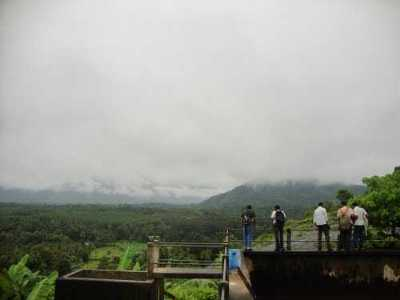
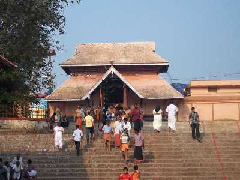

KOTTAYAM
Illikkal Kallu

Located at a height of 6000 ft above the sea level in the Western Ghats of Kottayam, Kerala, Illikkal Kallu is a major tourist attraction and one of the most pristine spots in all of India. Situated in Moonnilavu Village, Meenachil taluk, the nearest city to the summit is Teekoy. Besides several other factors which make this peak unique, the most prominent feature is that half the boulder of the majestic rock has fallen apart. The remaining half stands sturdy and presents an extremely exalted picture.
Nadukani
After all the blessings from temples, it is time for some adventure. Nadukani is one such place nestled amid the wilderness of nature and densely wooded hills offering its visitors a beautiful trail for trekking. Lying at an altitude of 3000 ft above the sea level atop a hill, this place also affords a mesmerizing view of mountains on northern side and that of River Muvattupuzha.
Kottathavalam

A fascinating cave carved out of rock surface is Kottathavalam lying on the top of a Murugan Hills at Kurisumala. The cave is considered to be the resting place for Madura Royal family. The cave is adorned with various sculptures of Gods and Goddesses along with the sculptures of weapons used in the ancient times giving us a glance into the amazing past.
Thirunakkara Mahadev Temple
A popular Hindu shrine and great epitome of Kerala style of architecture, Thirunakkara Mahadev Temple is dedicated to Lord Shiva. The temple was established in 16th century by the king of Thekkumkur. The place is also adorned with several beautiful murals showcasing the Hindu themes. A festival of Aaraattu celebrated for 10 days witness several cultural performances of various art forms like Kathakali, Velakali and Mayilattom performed by professionals. The festival attracts devotees and tourists in large number to the temple.